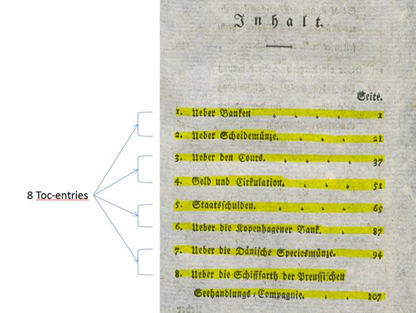

Table of Content (TOC-entry)
Tables of Content have a particular layout (PageTypeSimpleType table-of-contens). They usually appear at the beginning or end of a work and have a formal heading.
While it is already clear from the definition of the page type that this is a table of contents, the lines of the table which are connected to each other are displayed as individual TOC entries.
